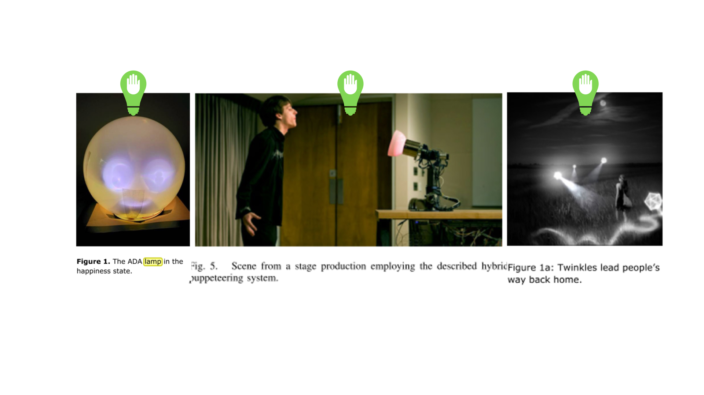

Abstract
This study aims to learn the user experience with tangible interfaces consisted of three semi-autonomous wall lights. Participants were guided and followed by step-by-step instruction offered by three lights to completed a series of procedural tasks. The qualitative study was conducted to explore the difference between when people are guided and followed by lights. In addition, it provides a reference to the intuitive interaction design for interactive lights system under kitchen setting.
Concept development
Lights design beyond luminaire
Autonomous lights have been widely developed to assist various fields. Researchers started to look into its function beyond luminaire. Honghao designed a flying light(figure3) to improve urban safety. The light escorts people on their way back home by following their movement, which avoids the problem of privacy invasion in comparison to surveillance camera [19]. An anthropomorphic lamp is capable of conveying emotion (fugure1) [20] through the variation of colours and brightness. Hung-Yu Tseng proposed a light embedded in a navigation system to guide people while they are riding scooters [21] while Yuichiro uses lights to divide indoor spaces. Meanwhile, Hoffman [22] and Diana [2] paid attention to exploiting the spatial movement of lamps to achieve anthropomorphism (figure 1). The later extends lights’ function to behaviour changing and socialising. Adding autonomy to lights (TAIs) could further expand lights’ capability out of illumination. It not only lessens the cognitive workload from the human side by shifting them to machines but makes people feel more connected to everyday objects [2]. This was discovered in a study in which an autonomous desk lamp is generally perceived “displaying a social behaviour through functional movement”.
Prototype & Technical Details
The three lights consisted of three 12v GU5.3 LED light bulbs, six normal-size servos, one Arduino Uno board, two relays, fourvoltage regulators, one Bluetooth chip and a 12v 6A power supply (figure 7).